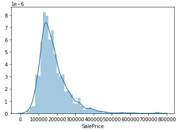
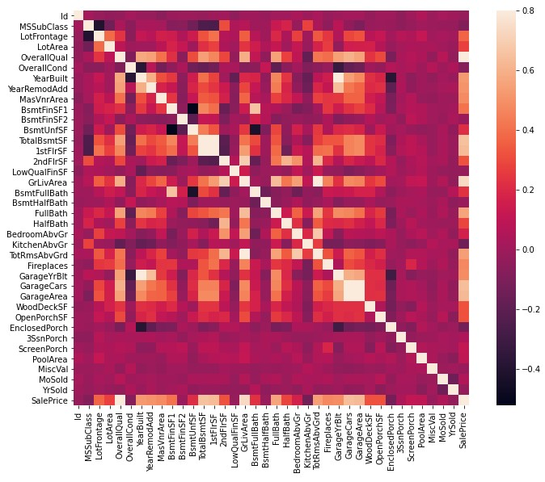
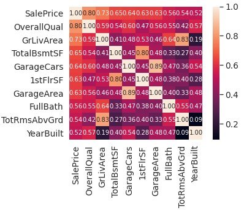
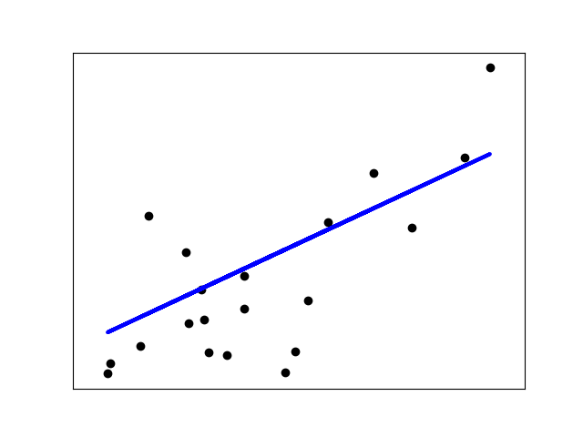
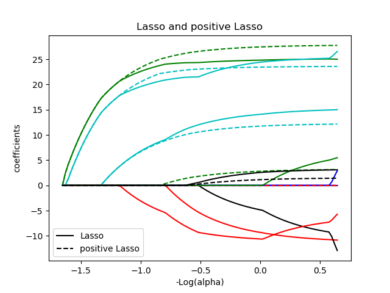
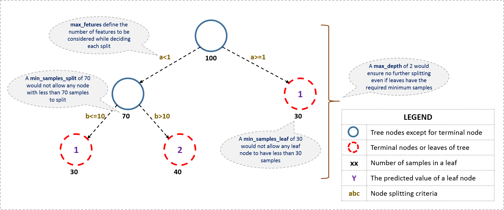

Similar to other machine learning blogs that I have posted, the same thought process will be applied to this new competition. The goal of this competition is to predict the sales price for each house in the data set. The data set includes 79 explanatory variables describing almost every aspect of residential homes in Ames, Iowa.

As you can see from the image from above, the data set is much more robust than the Titanic Competition. However, from the description of the competition, we know we will be focusing on different types of regression. In order to figure out what types of regressions to run, we must understand the data and providing relavent visualizations of the data is very helpful. Below are just a few of the visualzations I created to help with my understanding of the data. To see all of more, follow this link to my kaggle notebook.
  Correlation matrices are a great way to find patterns with any kind of numerical or quantitative data. With this kind of visualization it is pretty easy to see which features to choose to run your different regressions on. There is some categorical data in this data set that could be useful for a more robust and in depth model. This competition is also focused on advanced regression techniques like random forest and gradient boosting, so most of my model will be built around that for this particular project.
In this competition, I had a chance to really dig deep into the different kinds of regressions and when each one is most effective for training models. Linear Regression is probably the simplest model in Scikit-Learn's library. The LinearRegressor fits a linear model with coefficients w = (w1, …, wp) to minimize the residual sum of squares between the observed targets in the dataset, and the targets predicted by the linear approximation.
Linear Regression Example
Another common kind of regression that is very useful with this type of data is the Lasso regression. The Lasso is a linear model that estimates sparse coefficients. It is useful in some contexts due to its tendency to prefer solutions with fewer non-zero coefficients, effectively reducing the number of features upon which the given solution is dependent. For this reason Lasso and its variants are fundamental to the field of compressed sensing. Under certain conditions, it can recover the exact set of non-zero coefficients. The implementation in the class Lasso uses coordinate descent as the algorithm to fit the coefficients.
Lasso Regression Example
The Random Forest Regressor is essentially a large decision tree that uses data to make predictions, however it is a bit more sophisticated than a normal decision tree. A random forest is a meta estimator that fits a number of classifying decision trees on various sub-samples of the dataset and uses averaging to improve the predictive accuracy and control over-fitting. The sub-sample size is controlled with the max_samples parameter if bootstrap=True (default), otherwise the whole dataset is used to build each tree.

Random Forest Regression Example
The final regression I used in this competition was the Gradient Boosting Regressor. This is another form of decision tree similar to Random Forest but this involves loss functions. Gradient Tree Boosting or Gradient Boosted Decision Trees (GBDT) is a generalization of boosting to arbitrary differentiable loss functions. GBDT is an accurate and effective off-the-shelf procedure that can be used for both regression and classification problems in a variety of areas including Web search ranking and ecology.
Gradient Boosting Regression Example
Once all of these models have been made, the next step is to combine or ensamble them to make the predictions as accurate as possible. The goal of ensemble methods is to combine the predictions of several base estimators built with a given learning algorithm in order to improve generalizability / robustness over a single estimator. There are two major types of ensambling that are most used, averaging and boosting. In averaging methods, the driving principle is to build several estimators independently and then to average their predictions. On average, the combined estimator is usually better than any of the single base estimator because its variance is reduced. By contrast, in boosting methods, base estimators are built sequentially and one tries to reduce the bias of the combined estimator. The motivation is to combine several weak models to produce a powerful ensemble. Once this is done we can make our final predictions and submit them to the competition.
House Price Data Source by Kaggle via House Prices: Advanced Regression Techniques.
Information and definitions of algorithms sourced by Scikit-Learn website.